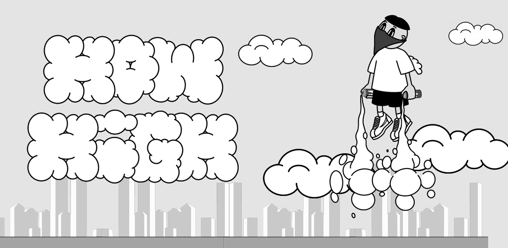

POLYUS / independent developer
Игровые системы,которые хочетсяразбирать.
Я проектирую механики, собираю их в Unity и проверяю на практике. Здесь показываю не только результат, но и решения, из которых он складывается.
Смотреть проекты01 / WORK
Проекты
Три проекта — мобильная игра, головоломка и системный экшен. Откройте карточку, чтобы увидеть мой вклад и дизайнерские решения.
01 / PLATFORMER · GOOGLE PLAY CLOSED TESTHow HighГеймдизайн и разработка · Android
Аркадный платформер о подъёме по облакам, точных приземлениях, ракете и личном рекорде.

02 / PUZZLE · В РАЗРАБОТКЕ4×4Механики, прототипирование, уровни · Unity
Пространственная головоломка о перемещении фишек между комнатами и последствиях каждого хода.
03 / ACTION · В РАЗРАБОТКЕBlood RaveИгровые системы и разработка
Системный экшен о риске: держаться ближе к толпе ради результата или вовремя выйти.
У каждого проекта есть прямая ссылка: открытым кейсом удобно поделиться отдельно.
02 / CREATIVE DEVELOPMENT
CreativeDevelopment
Создаю рекламные игровые ролики: от идеи и сцены в Unity до монтажа и версий под разные форматы.
Игровое действие должно быть понятно за секунды. Я строю креатив вокруг того, что зритель увидит, поймёт и захочет попробовать.
Игровые сцены
Собираю и снимаю игровые ситуации в Unity под задачу ролика.
Монтаж и версии
Работаю с темпом, акцентами и адаптацией под разные рекламные форматы.
Публичная подборка роликов появится здесь после согласования материалов.
03 / METHOD
Как я работаю
У игры есть идея. У игрока — своё понимание этой идеи. Между ними находится моя работа.
- 01
Формулирую правило
Что игрок делает, зачем он это делает и какой выбор делает игру интересной.
- 02
Собираю играбельное
Прототип в Unity помогает увидеть слабые места механики и взаимодействия.
- 03
Смотрю на игроков
Плейтест даёт факты: первое действие, места остановки, ошибочные ожидания и желание повторить попытку.
04 / CONTACT
Есть игра,которую стоитразобрать?
Открыт к разговору о геймдизайне, игровых прототипах и совместной работе. Публичные заметки и ход разработки — в моих каналах.
GitHub Threads / POLYUS